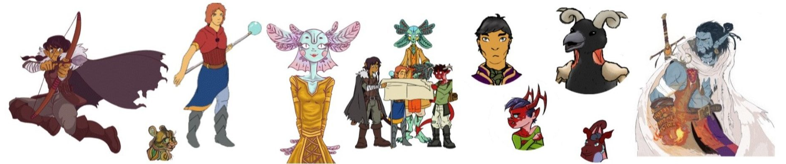
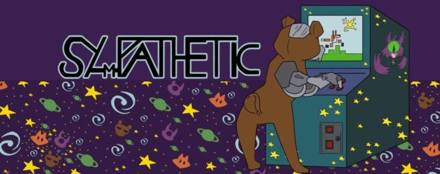

Saltsketeers.com (Role playing collaboration)(2018 - 2019)
The saltsketeers are a not so merry band of adventurers that are out to get the job done.
What that job is? and why? ...umm, ...well, nobody really stopped to ask that, but they are certainly doing it.
Don't worry though, what they lack in direction, and style, and sense of humour, they make up for with tenasity
|
Actor Role: Diallea Annezmon, party theif and halfling hellion. Proffesional Role: Webmaster, Business manager, Games and Interactive media designer |
 |
Sy_Pathetic (Youtube Channel) (2018 - present)
Three anthropomorphized cybernetic students time travel back to the 80's to pull off the ultimate hooky
and find the best that 8-bit has to offer. The Sy_Pathetic gang are half game players, half game reviewers,
and half game hecklers. What does that add up to? A big mess and a lot of fun.
|
Actor Role: Sy_Fox, a mostly out of his league gamer and commentator Professional Role: Business and Content advisor, Art contributor, Technical Support |
 |
Goddess: Ascension (Novel) (2009 - present)
"In the time of Goddes, there dared arise a Goddess."
The high priest and priestess of an established order wish to elevate their faith to the pantheon of Gods.
However things don't go as planned and now they must struggle to keep all they have built, and their love, together.
Professional Role: Writer, Author, Manager
Greyline Instruments(1996 - 2017)
| Manufacture of liquid level and flow meters for process control, water treatment, and irrigation. Professional Role: Software engineer for embedded systems. |
St Lawrence College: Game Programming Student(2018 - Present)
Stormont Yacht Club: Harbour Master and Sailor(2018 - 2019)
Career Objective
To develop games around concepts of natural social and economic dependancies. The developers build the enviroment; the players build the game.